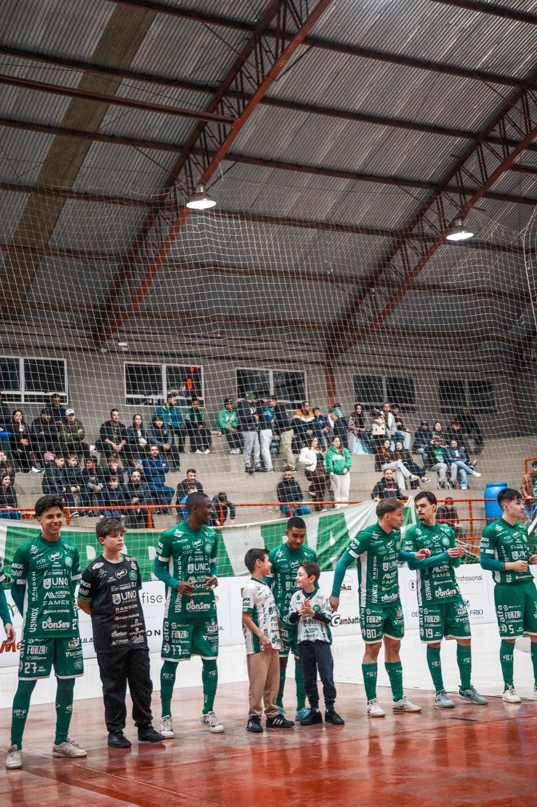
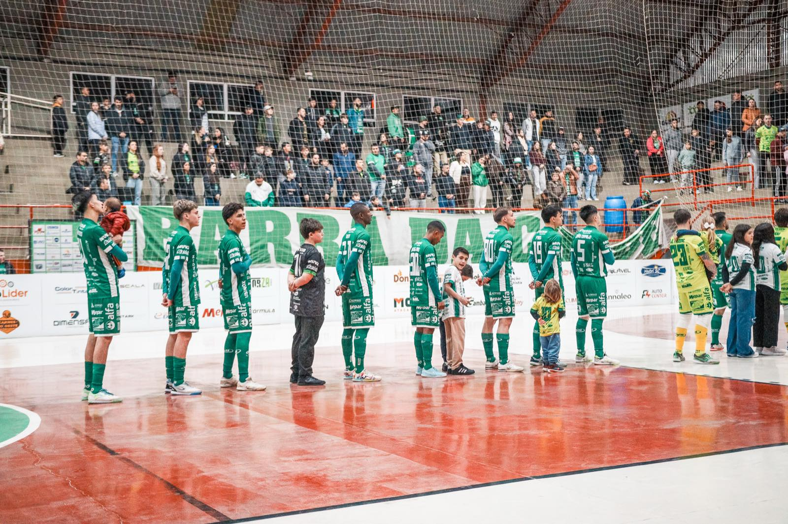
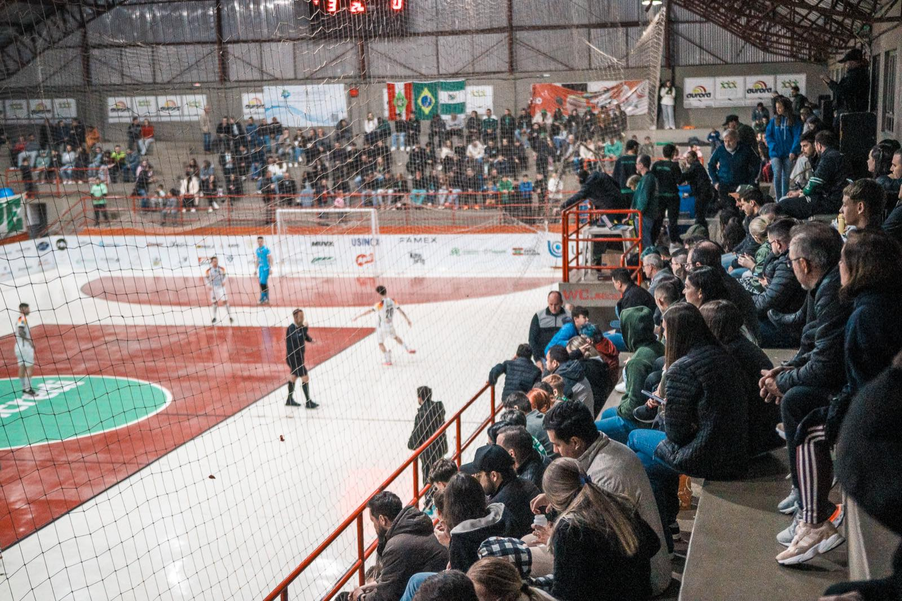

Após a grande vitória sobre o Sorriso (MT) por 5 a 1 no último sábado (8/8), pelo Campeonato Brasileiro de Futsal, no SESC, a Prefeitura de Chapecó/Chapecoense/Unochapecó reencontrará a torcida verde-branca neste fim de semana. Pela frente estará a Apaff/Floripa, em jogo antecipado da nona rodada do Catarinense Série Ouro. Desta vez, o duelo será no Ginásio Plínio Arlindo De Nes (SER Aurora).

A bola rola neste sábado (15/8), a partir das 17h. O torcedor pode garantir o ingresso de forma antecipada nos seguintes locais: Loja Oficial da Chape Futsal (na rua Paulo Marques, entre as avenidas Fernando Machado e Porto Alegre, anexo à Classic Uniformes), Loja iXap Sports (na avenida Getúlio Vargas, entre as ruas Paulo Marques e Vitório Cella) e site ingressojogo.com.br. Também haverá venda na hora, na bilheteria do ginásio.
Os tickets são divididos por lotes. No primeiro, a entrada sai por R$ 20,00, e no segundo, R$ 25,00. O meio-ingresso custa R$ 10,00 e vale para as pessoas com direito garantido por lei. Criança até 12 anos entram de graça, sem necessidade de retirar cortesia, mas precisam estar acompanhadas por um responsável e portando documento de identificação.

Associe-se
Ainda é possível se associar no Verdão das Quadras. Os interessados devem entrar em contato pelo WhatsApp (49) 99975-1964. O torcedor adquire uma camisa oficial da equipe no valor de R$ 300,00, podendo parcelar em até cinco vezes no cartão, e ganha uma carteirinha para ter acesso a todos os jogos em casa nesta temporada. No ginásio, em dias de jogos, também é possível se tornar sócio.
Em primeiro
A Chape Futsal busca o triunfo no confronto diante da Apaff/Floripa para se manter na liderança da Série Ouro. Os chapecoenses somam 13 pontos, mesma pontuação do vice Pouso Redondo. A agremiação da capital aparece em oitavo lugar, com 9 pontos. Após turno único, os oito primeiros colocados avançam ao mata-mata. Em contrapartida, os dois últimos são rebaixados à Série Prata 2027.

Crédito das fotos: @rogersilva_fotografia/@achapefutsal